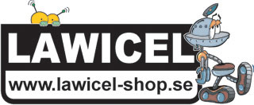

When?
17-19th august 2012. We are all day and night and participants can just bring a sleepingbag and take a nap in a corner during the night.
On Friday we will have a slow start with t-shirt printing, boardgames and food. We will also have 2 "tipsrundor", one difficult and one more noob-friendly. We will open officially 18:00. We will sell dinner (vegan) around 20:00. Sometime during the night we will serve fried food.
On Saturday we will have most of the talks and workshops. We will sell snacks and stuff after 18:00.
On Sunday we will be open to! Maybe you didn't have time to finish your project on Saturday? Then come back (or stay until) Sunday! There will also be time to make awesome plans for the future!
Why?
Because the technology you don't understand owns you.
The technology that is unexplored owns us.
We have internet and club mate, interesting talks and workshops, bring your laptop or just an idea. Together we will fill the weekend with fun, useful and awesome hacks. We can make things better, we can make everything!
*********************************************************
Därför att den teknik som du inte förstår äger dig.
Den teknik som är outforskad äger oss.
Vi har internet och club mate, intressanta talks och workshops. Ta med din egen laptop eller bara en ide så fyller vi helgen med kul, användbara och awesome hacks. Vi kan göra saker bättre, vi kan göra allt!
Talks
The talks will be between 30-60 minutes long.
GPU:er och rendrering
Lördag 14:00
Kristoffer Smedlund
Kristoffer kommer här att gå igenom hur GPUs (grafikkretsar) fungerar i praktiken, vad en shader egentligen är och hur modern grafikutveckling med openGL kan gå till.
Låsdyrkning
Lördag 16:00
Phyx
Ett inledande talk om hur lås och nycklar fungerar. Följs sedan upp med en workshop där alla får prova själva.
Internets inre beståndsdelar
Lördag 18:00
Martin Millnert
Det snackas mycket om molnet. För mycket för något som är så diffust. Hur fungerar Internet *egentligen*. I detta föredrag går vi bakom abstrationerna och tar reda på vad som verkligen finns. Var går kablarna? Hur fungerar peering? Vad är en KO? och mycket mer.
TOR
Lördag 20:00
Andreas Jonsson
Vad är ett TOR-relä och varför borde du köra ett? Andreas delar med sig av sina erfarenheter med att optimera prestanda, skillnader på exit och vanliga reläer. Det blir mycket fokus på det praktiska och stort utrymme för frågor och diskussion.
30 år sedan heta-linjen-upploppet
Lördag 22:00
Magnus "monki" Eriksson
En septemberkväll 1982 samlades ett tusental ungdomar i Rålambshovsparken till synes utan syfte. Polis gick till attack och stenkastning utbröt. Man menade att en bugg i telefonsystemet -- "heta linjen" -- låg bakom upploppet. 30 år senare är det dags att ge denna händelse till rätta plats i nätpolitikens historia.
Workshops
There will be tables open for spontaneus workshops aswell.
Arduino för nybörjare
Lördag 15:00
Hedvig Kamp
En rolig nybörjarworkshop. 10 arduinos och lite olika sensorer och saker finns att tillgå.
Sponsrad av:

Webpublicering för aktivister
Lördag 15:00
Axel Gagge
En snabb och smutsig workshop i webprogrammering för aktivister! Ta med din egen dator. Vi lär oss att skriva ett enkelt tema i Wordpress och sätta upp hemsidor och bloggar för kampanjer och organisationer.
Låsdyrkning
Lördag 17:00
Phyx
Lär dig hur vanliga nyckellås är uppbyggda och hur man kan dyrka enklare sådana.
OBS! Vi har rätt dåligt med lås så ta JÄTTEGÄRNA med lås att dyrka (hänglås, cykellås lr dylikt).
Datorverktyg för papper och kartong
Lördag 17:00
Geraldine "submarine" Juarez och Magnus "monki" Eriksson
Skärmar är tråkiga! I den här workshopen lär vi oss trix som att göra papp- och kartong-modeller från 3D-objekt och att printa små vikbara böcker av ditt internet-flöde.
NFC
Lördag 19:00
Vi undersöker och experimenterar med den trådlösa Near Field Communication som används av bla. SL. Ta med kort som du vill undersöka!
Tor
Lördag 21:00
Andreas Jonsson
Efter TOR-talket kör Andreas en praktisk workshop.
Party
Since we won't be able to sell alcohol at the event we will have a separate party on saturday night. Pixel-glam! The party will be at Solna HQ.
Sign up HERE. Please note that you must be on the list to attend the party. Location and directions will be sent to you after you've signed up:)
Commute to the event
Take bus 69 from the Stockholm central station, it takes about 12 minutes to reach Tekniska Museet.
Tickets
The event is FREE, we would however appreciate if you send us an email with an estimate of how many people you will be so we can get an idea of how many people will show up to info@make-all.se